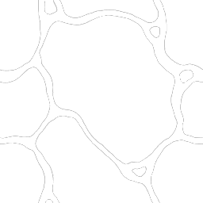
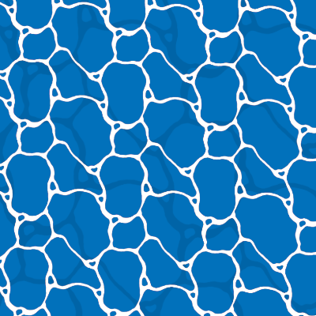
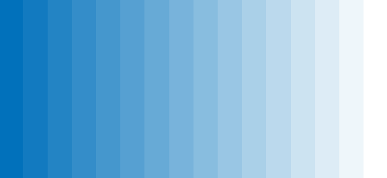
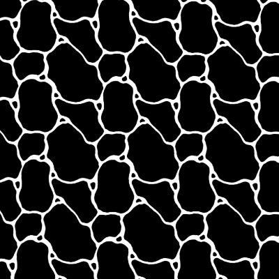
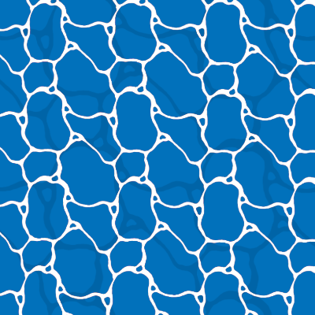
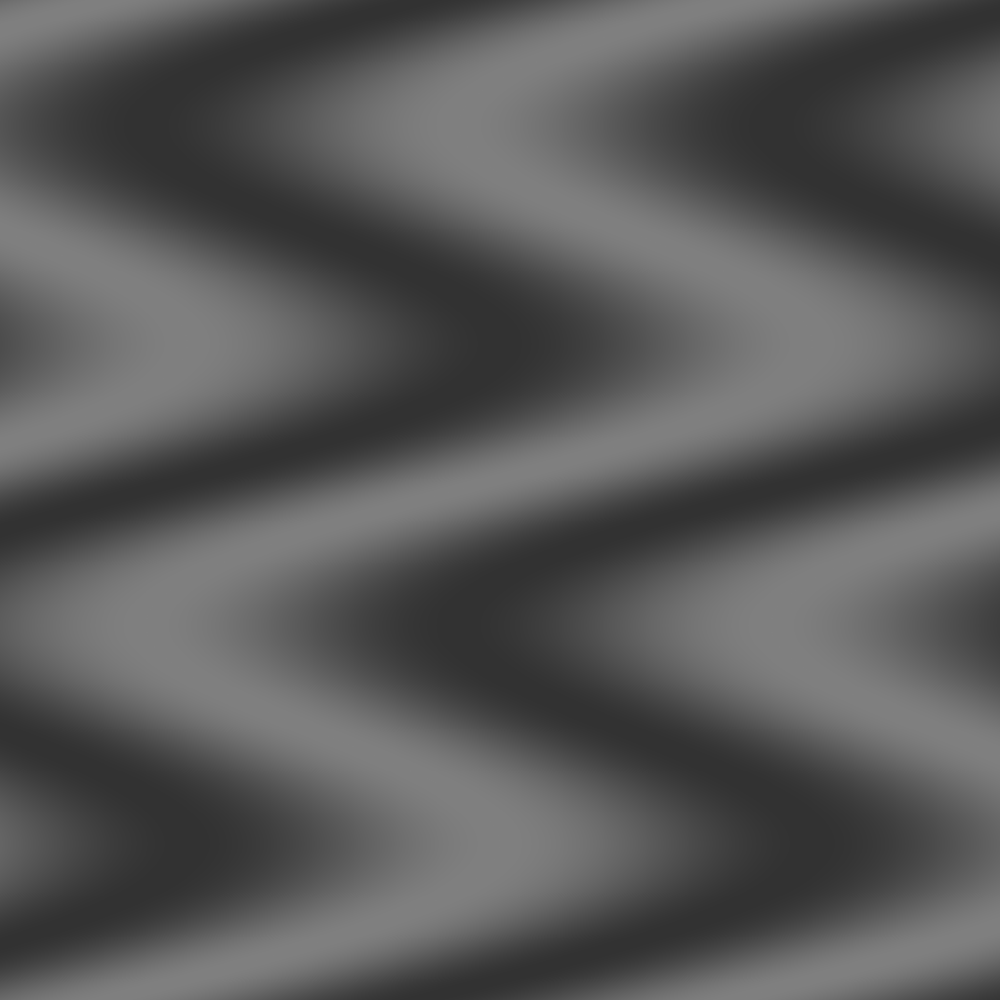
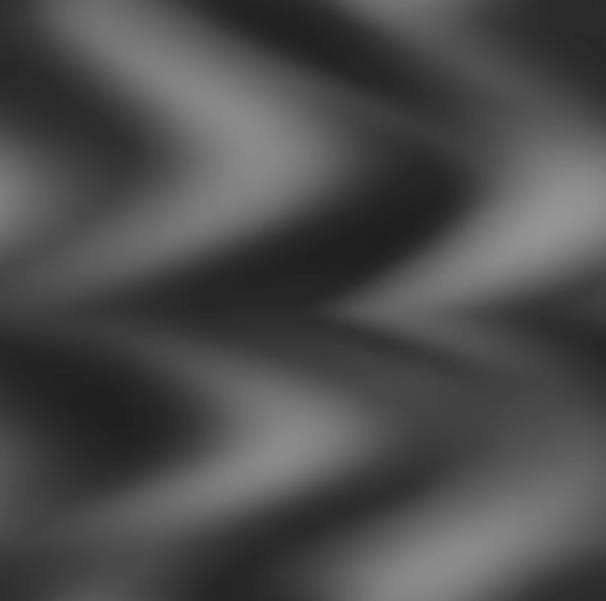
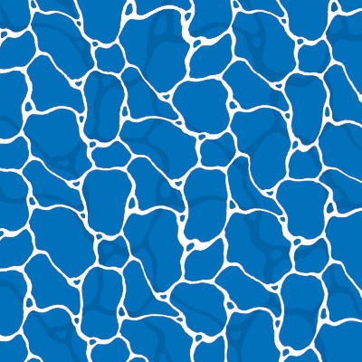
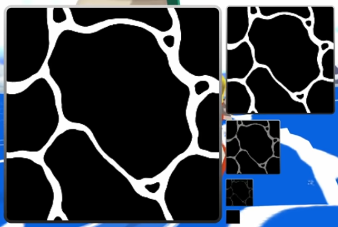

HW 6: Wind Waker Water (Texture Mapping)
In this assignment one of my primary goals was to replicate the "cartoon" water material found in "The Legend of Zelda: The Wind Waker". The stylized elements in this game have always been a favorite of mine, so I jumped at the chance presented here.
Controls and some things to try (new freecam like camera controls):
- Rotate the camera by drag clicking your mouse on the canvas.
-
Move in the horizontal plane with
WASD, and on the vertical axis withSpaceandShift -
Increase / Decrease the fov with
-and+(= key no shifting). Reset the fov with0. -
View the different layers of the sea material with the
Sea Materialselector. - Regenerate the scene a couple times.
How does the water material work?
A short breakdown of how the process works in The Wind Waker is provided in this video: How Wind Waker Builds Its Water Materials. I follow much of the same steps, although it's worth noting that the displacement map in Wind Waker does not appear to be an actual texture as shown in the video, but a combination of sine waves calculated at runtime. At the very least I was unable to find a displacement map texture after decompiling my copy of the game, but noted some sine wave offset calculations.
Where is the water foam texture from?
The foam texture I'm using is from a decompilation of my copy of The Wind Waker. This should fall within fair use best I can tell. Nintendo if you want to copyright strike my homework feel free to do so thanks.
Albedo Texture Creation
First let us think about the main albedo (color) texture map for the ocean surface material. The Wind Waker has a singular foam texture consisting of a grayscale tillable cell like structure. One could implement a similar texture as a procedural material using cellular noise; In fact I tried this at first but it didn't look quite as good. The original image consists of 16 shades from white to black.


Color Ramping
Now in most scenes we would not be happy with our completely black and white water texture, so a color ramp texture is used to map the grayscale values to rgb values. A color ramp texture generally consists of a strip of pixels 1 pixel tall and as wide as the highest value of your grayscale image (256 pixels wide in our case). When rendering the grayscale texture the shader can then look up the rgb color corresponding to the grayscale value (sometimes this value is only in one channel, generally the .r channel it seems, but in our case with normal rgb texture images it is common to use the luminance instead.). In The Wind Waker this ramp consists of 16 shades going from a dark ocean color to the main ocean color. Different times of day or weather will change this color ramp at runtime allowing a more dynamic environment. This is especially important ads the water itself is not subject to lighting effects in the same way as other objects are. I've emulated this setup with a color ramp texture that can be easily updated based on the colors at the start and end of the gradient. Now something interesting here is that a color ramp does not need to be a gradient, you could assign completely random color palettes if you wanted. Although the structure is different this is the essence of color pallets in retro arcade games.

Layering


Displacement Map
The newly created layered albedo texture is now influenced by a displacement map. When a pixel in a displacement map is white the albedo texture UV is shifted up and to the right, when it is black the UV is shifted down and to the left. Then to make the sea foam appear as if it is moving, we simply scroll the displacement map texture over time. This leaves us with a fairly complete water texture.
The wave displacement texture I use in this assignment is a composition of multiple sin waves with an additional sin wave shifting the phase to produce the side to side waves. this is fairly similar to the texture seen in the video and I'm pretty happy with the effect, although it would be nice to add some additional noise into the texture or put a little more thought into the pattern later.



Mipmapping
We covered automatic mipmapping in class which helps us save on compute power, but The Wind Waker leverages this feature to achieve a fading effect for "free". In order to make the water texture fade away low resolution mipmap levels slowly become pure black without the foam texture, effectively fading it away in the distance.
It's also worth noting that this mipmap fading effect is based on the resolution of the screen its being rendered on as this changes when the smallest pure black maps will be used. This is noticeable if we change the scale of the rendering canvas: a larger canvas will show patterns further into the distance than a smaller one.
This effect is a little hard to see in our scene above, but if you fly to one edge of the scene and look to
the other side it is somewhat noticeable. You can also try flying high above the scene or changing your fov
with - until the mipmaps kick
in from the textures being small. Interestingly in my implementation the white foam layer fades away first and
then the shadow layer, this makes sense as the shadow layer repeats less times. However in the game they both
fade out at about the same time from what I can tell. Perhaps their textures are closer in size or the repeat
mapping works different. You could also make more black mipmap levels for the larger shadow texture.

Vertex Shader
Honestly the related vertex shader is not that interesting, as it is something that could come out of a HW3. Basically it consists of multiple composed sin waves that contribute to the height at a given vertex.
// composition of waves to make natural ish looking water float yWave = uPosition.y; yWave += 1.f * sin(2.0f * 3.14159f - uTime / 20.f); yWave += 0.3f * sin(dot(aPosition.xz, normalize(vec2(0.5f, 1))) * 2.0f * 3.14159f / 20.f - uTime / 2.f); yWave += 0.2f * sin(dot(aPosition.xz, normalize(vec2(-.4f, .3f))) * 2.0f * 3.14159f / 15.f - uTime); // plug the updated y value into the translation... mat4 T = translate3D(uPosition.x, yWave, uPosition.z);
Conclusions
Textures are quite fun to work with...